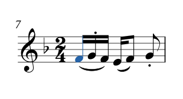
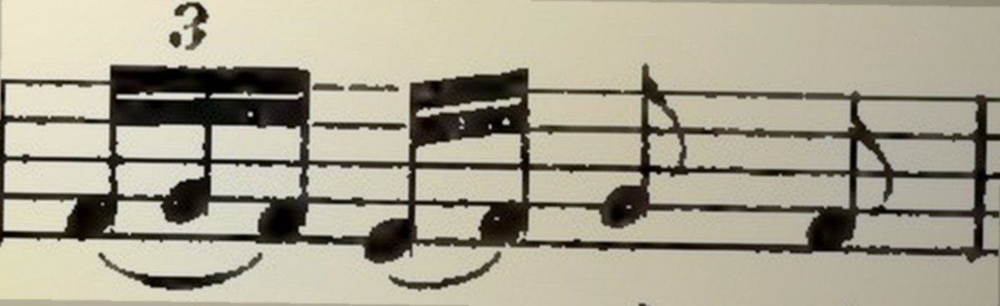
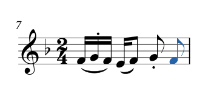
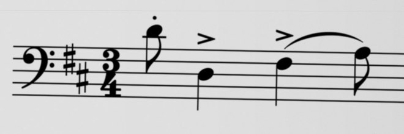
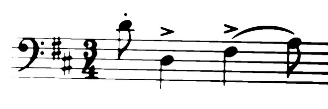
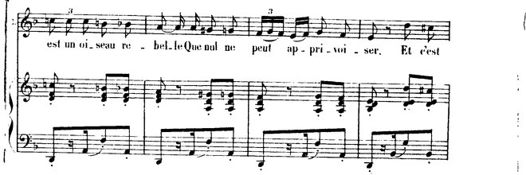
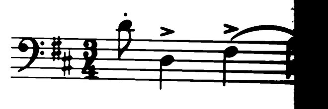
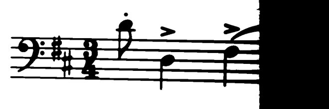
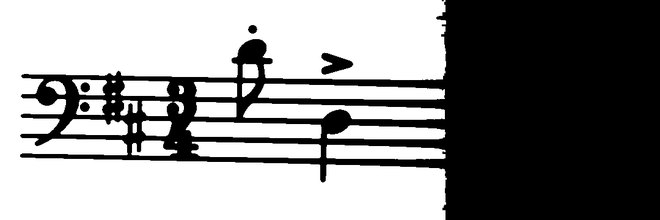

포트폴리오 · 종이 악보개인 프로젝트
사진 한 장을
악보 파일로

악보 파일

「하바네라」 1883년 판 · 사진 효과는 설명용 · 아래는 실제 판독
종이 악보 → 악보 파일개인 프로젝트
손으로 입력하던 악보를
사진에서 가져옵니다
사진에서 음표 읽기 → 악보 파일
컴퓨터에서 고칠 수 있는 악보실제 파일 편집 예시

① 파란 음표 듣기 ♪
② 한 칸 위로
③ 바뀐 음 듣기 ♪
음표를 바꾸면 재생되는 소리도 바뀝니다.
아래 ‘음표 바꿔 보기’에서 직접 비교할 수 있어요.
하바네라 원판 · 사진 효과는 설명용
판독 MusicXML의 첫 음만 편집 · 인식 오류는 남아 있음
판독 MusicXML의 첫 음만 편집 · 인식 오류는 남아 있음
원본과 결과 비교어려웠던 점
사진과 나란히
맞춰 봤습니다

사진의 마지막 자리
음표가 있습니다.
AI가 읽은 마지막 자리
이 음표가 빠졌습니다.
빠진 음표 보완설명용 재현

마지막 음표를 채운 모습입니다.
다른 음·리듬 오류는 별도로 확인해야 합니다.
하바네라 7마디 · 위는 실제 판독
아래는 빠진 음 하나를 직접 추가한 설명용 예시
아래는 빠진 음 하나를 직접 추가한 설명용 예시
여러 번 읽고 합치기선택하는 기준
같은 마디를
여러 결과에서 비교합니다
음 길이가 맞는 후보부터 추리고,
서로 더 많이 일치하는 결과를 고릅니다.
같은 마디의 판독 후보원리 설명용 · 3개 확대
1차음 길이 부족
2차길이 맞음
같은 결과
같은 결과
3차길이 맞음
같은 결과
같은 결과
↓ 길이가 맞고, 두 결과가 일치
선택최종 악보의
이 마디로
이 마디로






사진의 명암을 달리해 읽고, 마디마다 이 기준으로 합칩니다.
같이 틀릴 수도 있습니다.
합친 뒤에도 원본과 대조합니다.
합친 뒤에도 원본과 대조합니다.
실제 선택 규칙을 단순화한 도식
음표와 붙임줄 일치도 비교 · 동률이면 입력 순서
음표와 붙임줄 일치도 비교 · 동률이면 입력 순서
별도 악보로 검증실제 개발 기록
실제 사진에서도
수정할 곳이 줄었습니다
검증에 사용한 악보왈츠 첼로 파트 · 사진 3장 · 219마디앞의 하바네라 시연과는 다른 악보입니다.
개선 전36수정 필요 마디
개선 후5수정 필요 마디
정답 악보와 음높이·길이·붙임줄을 비교했습니다.
슬러·셈여림 등 연주 표시는 이 수치에 포함하지 않습니다.
남은 5마디
여러 마디 쉼표 구간 4마디 + 잘못 읽은 붙임줄 1마디
남은 곳은 원본과 대조해 손질합니다.
2026-10-25 개발 기록 · 10-27 재현 기록 확인
완성 악보는 연주를 따라 악보를 넘기는 프로그램에 사용
완성 악보는 연주를 따라 악보를 넘기는 프로그램에 사용